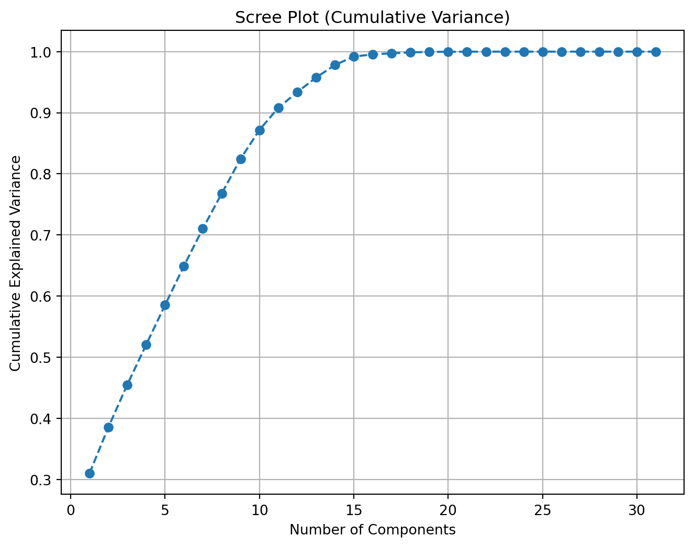
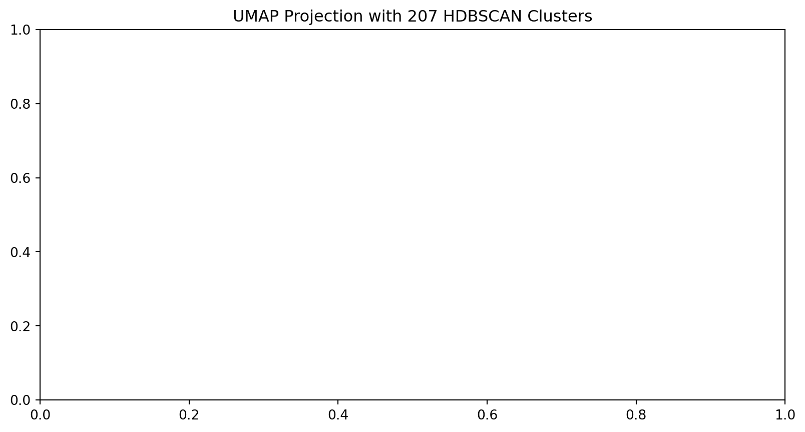
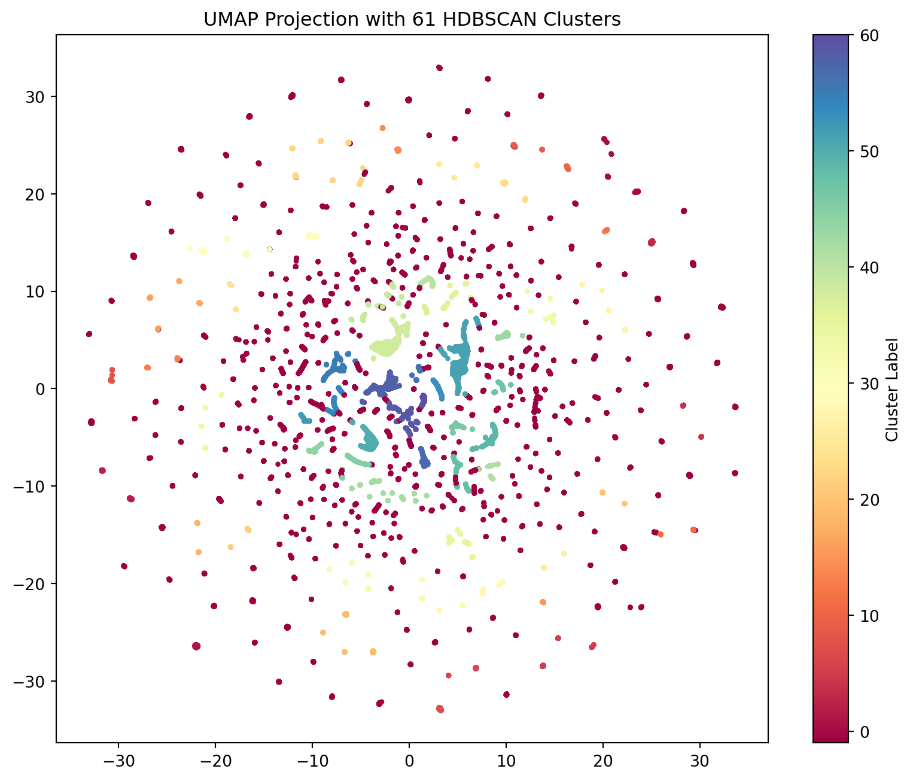
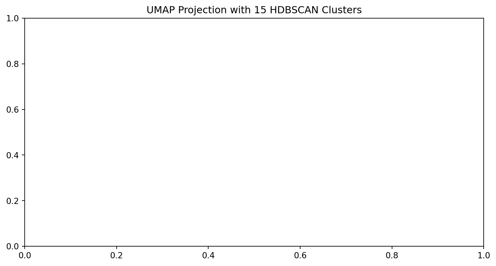
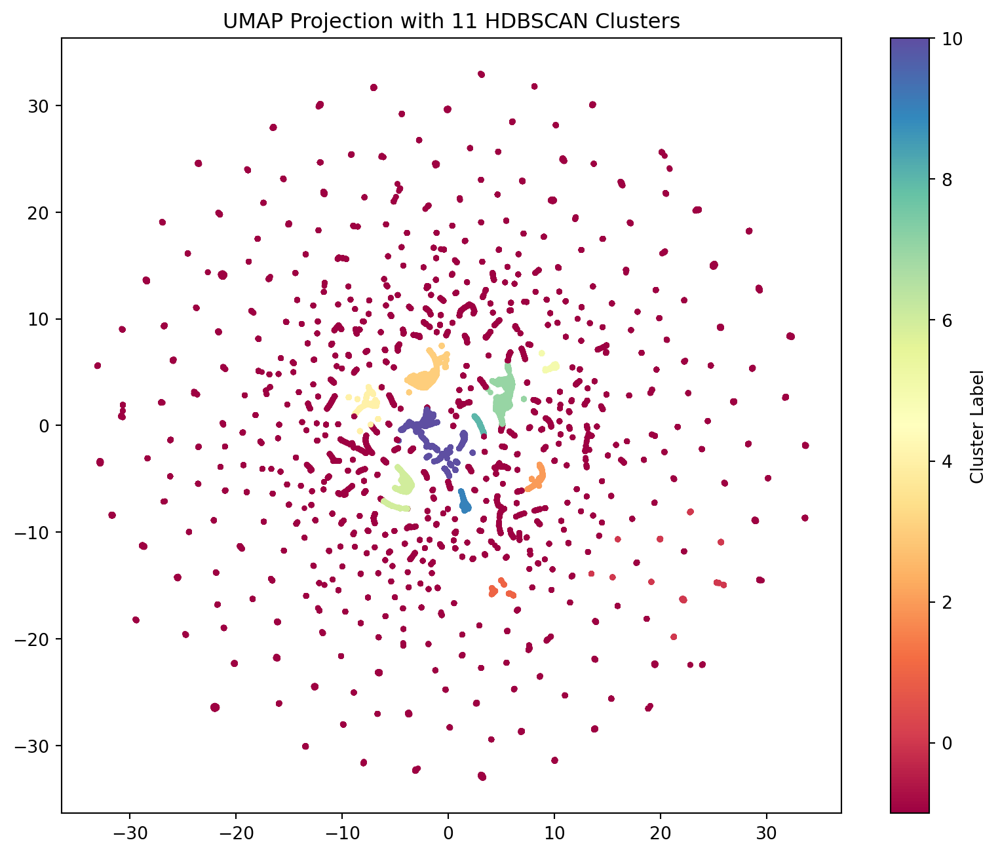

import pandas as pd
import numpy as np
from pandas.core.common import random_state
import matplotlib.pyplot as plt
import seaborn as sns
import sklearn
import umap
from scipy import stats
from sklearn.decomposition import PCA
from sklearn.preprocessing import StandardScaler
from sklearn.preprocessing import QuantileTransformer
from sklearn.manifold import TSNE
from sklearn.cluster import KMeansI will be using the Parcel Export Sheet 2 data for the time being as Joseph had stated that best case scenario this is the data used to predict with. While he had mentioned that some of the data is out of date, I wanted to see what insights could be pulled from this first, then work with the other datasets later on as we get a better understanding of the data. ##
<class 'pandas.core.frame.DataFrame'>
RangeIndex: 53277 entries, 0 to 53276
Data columns (total 53 columns):
# Column Non-Null Count Dtype
--- ------ -------------- -----
0 ParcelId 53277 non-null object
1 TaxYear 53277 non-null int64
2 Active 53277 non-null object
3 ImpOnly 53277 non-null int64
4 IsIncluded 53277 non-null bool
5 PropType 53277 non-null int64
6 PropTypeDescription 53277 non-null object
7 Subdivision 38318 non-null object
8 Acreage 53277 non-null float64
9 Jurisdiction 53277 non-null int64
10 RecordType 53277 non-null object
11 SpecificPropType 53277 non-null int64
12 SpecificPropTypeDescription 53277 non-null object
13 Lat 51923 non-null float64
14 Lng 51923 non-null float64
15 ReviewedDate 52414 non-null float64
16 ReviewedBy 52414 non-null object
17 NbhdCode2 53277 non-null object
18 Area 53277 non-null object
19 ImpCode 53277 non-null int64
20 Res Imp Count 21893 non-null float64
21 TotGLA 21893 non-null float64
22 Tot Bsmt 21893 non-null float64
23 EffYearBuilt_Weighted 21893 non-null float64
24 Quality_Weighted 21893 non-null float64
25 MainImp.GroupCode 21893 non-null object
26 Main_StyleDesc 21893 non-null object
27 FullBaths_Total 21893 non-null float64
28 HalfBaths_Total 21893 non-null float64
29 BsmtFinishPct_Weighted 9663 non-null float64
30 Laundry_Count 21893 non-null float64
31 KitchenCount 21893 non-null float64
32 CarportArea 21893 non-null float64
33 CarportCapacity 21893 non-null float64
34 GarageArea 21893 non-null float64
35 GarageCapacity 21893 non-null float64
36 Main_YearBuilt 21893 non-null float64
37 Count_DetGarage 10572 non-null float64
38 SqFt_DetGarage 2376 non-null float64
39 Count_ DetCarport 10572 non-null float64
40 SqFt_DetCarport 500 non-null float64
41 Count_Barn 10572 non-null float64
42 Sqft_Barn 162 non-null float64
43 Count_Guest_House 10572 non-null float64
44 SqFt_Guest_House 25 non-null float64
45 Count_Pools 10572 non-null float64
46 SqFt_Pools 84 non-null float64
47 Count_Recreational_Courts 10572 non-null float64
48 SqFt_Recreational_Courts 52 non-null float64
49 Count_Shed 10572 non-null float64
50 SqFt_Shed 3587 non-null float64
51 Count_Gazebo_Pavilion 10572 non-null float64
52 SqFt_Gazebo_Pavilion 110 non-null float64
dtypes: bool(1), float64(35), int64(6), object(11)
memory usage: 21.2+ MB::: {#cell-Non-numeric columns .cell cache=‘true’ execution_count=3}
<class 'pandas.core.frame.DataFrame'>
RangeIndex: 53277 entries, 0 to 53276
Data columns (total 12 columns):
# Column Non-Null Count Dtype
--- ------ -------------- -----
0 ParcelId 53277 non-null object
1 Active 53277 non-null object
2 IsIncluded 53277 non-null bool
3 PropTypeDescription 53277 non-null object
4 Subdivision 38318 non-null object
5 RecordType 53277 non-null object
6 SpecificPropTypeDescription 53277 non-null object
7 ReviewedBy 52414 non-null object
8 NbhdCode2 53277 non-null object
9 Area 53277 non-null object
10 MainImp.GroupCode 21893 non-null object
11 Main_StyleDesc 21893 non-null object
dtypes: bool(1), object(11)
memory usage: 4.5+ MBIndex(['ParcelId', 'Active', 'IsIncluded', 'PropTypeDescription',
'Subdivision', 'RecordType', 'SpecificPropTypeDescription',
'ReviewedBy', 'NbhdCode2', 'Area', 'MainImp.GroupCode',
'Main_StyleDesc'],
dtype='object'):::
::: {#cell-Numeric columns .cell cache=‘true’ execution_count=4}
<class 'pandas.core.frame.DataFrame'>
RangeIndex: 53277 entries, 0 to 53276
Data columns (total 41 columns):
# Column Non-Null Count Dtype
--- ------ -------------- -----
0 TaxYear 53277 non-null int64
1 ImpOnly 53277 non-null int64
2 PropType 53277 non-null int64
3 Acreage 53277 non-null float64
4 Jurisdiction 53277 non-null int64
5 SpecificPropType 53277 non-null int64
6 Lat 51923 non-null float64
7 Lng 51923 non-null float64
8 ReviewedDate 52414 non-null float64
9 ImpCode 53277 non-null int64
10 Res Imp Count 21893 non-null float64
11 TotGLA 21893 non-null float64
12 Tot Bsmt 21893 non-null float64
13 EffYearBuilt_Weighted 21893 non-null float64
14 Quality_Weighted 21893 non-null float64
15 FullBaths_Total 21893 non-null float64
16 HalfBaths_Total 21893 non-null float64
17 BsmtFinishPct_Weighted 9663 non-null float64
18 Laundry_Count 21893 non-null float64
19 KitchenCount 21893 non-null float64
20 CarportArea 21893 non-null float64
21 CarportCapacity 21893 non-null float64
22 GarageArea 21893 non-null float64
23 GarageCapacity 21893 non-null float64
24 Main_YearBuilt 21893 non-null float64
25 Count_DetGarage 10572 non-null float64
26 SqFt_DetGarage 2376 non-null float64
27 Count_ DetCarport 10572 non-null float64
28 SqFt_DetCarport 500 non-null float64
29 Count_Barn 10572 non-null float64
30 Sqft_Barn 162 non-null float64
31 Count_Guest_House 10572 non-null float64
32 SqFt_Guest_House 25 non-null float64
33 Count_Pools 10572 non-null float64
34 SqFt_Pools 84 non-null float64
35 Count_Recreational_Courts 10572 non-null float64
36 SqFt_Recreational_Courts 52 non-null float64
37 Count_Shed 10572 non-null float64
38 SqFt_Shed 3587 non-null float64
39 Count_Gazebo_Pavilion 10572 non-null float64
40 SqFt_Gazebo_Pavilion 110 non-null float64
dtypes: float64(35), int64(6)
memory usage: 16.7 MBIndex(['TaxYear', 'ImpOnly', 'PropType ', 'Acreage', 'Jurisdiction',
'SpecificPropType', 'Lat', 'Lng', 'ReviewedDate', 'ImpCode',
'Res Imp Count', 'TotGLA', 'Tot Bsmt', 'EffYearBuilt_Weighted',
'Quality_Weighted', 'FullBaths_Total', 'HalfBaths_Total',
'BsmtFinishPct_Weighted', 'Laundry_Count', 'KitchenCount',
'CarportArea', 'CarportCapacity', 'GarageArea', 'GarageCapacity',
'Main_YearBuilt', 'Count_DetGarage', 'SqFt_DetGarage',
'Count_ DetCarport', 'SqFt_DetCarport', 'Count_Barn', 'Sqft_Barn',
'Count_Guest_House', 'SqFt_Guest_House', 'Count_Pools', 'SqFt_Pools',
'Count_Recreational_Courts', 'SqFt_Recreational_Courts', 'Count_Shed',
'SqFt_Shed', 'Count_Gazebo_Pavilion', 'SqFt_Gazebo_Pavilion'],
dtype='object'):::
::: {#cell-Numeric Column Adjustment .cell execution_count=5}
cols_to_move = ['TaxYear', 'ImpOnly', 'PropType ', 'Jurisdiction', 'SpecificPropType', 'Lat', 'Lng', 'ReviewedDate', 'ImpCode', 'Res Imp Count']
non_numeric_cols = list(set(non_numeric_cols) | set(cols_to_move))
numeric_cols = [c for c in parcel_export.columns if c not in non_numeric_cols]
parcel_export[numeric_cols].shape # (53277, 31)(53277, 31):::
::: {#filter-parcel-export-for-pca-(only-numeric-columns .cell cache=‘true’ execution_count=7}
<class 'pandas.core.frame.DataFrame'>
RangeIndex: 53277 entries, 0 to 53276
Data columns (total 31 columns):
# Column Non-Null Count Dtype
--- ------ -------------- -----
0 Acreage 53277 non-null float64
1 TotGLA 53277 non-null float64
2 Tot Bsmt 53277 non-null float64
3 EffYearBuilt_Weighted 53277 non-null float64
4 Quality_Weighted 53277 non-null float64
5 FullBaths_Total 53277 non-null float64
6 HalfBaths_Total 53277 non-null float64
7 BsmtFinishPct_Weighted 53277 non-null float64
8 Laundry_Count 53277 non-null float64
9 KitchenCount 53277 non-null float64
10 CarportArea 53277 non-null float64
11 CarportCapacity 53277 non-null float64
12 GarageArea 53277 non-null float64
13 GarageCapacity 53277 non-null float64
14 Main_YearBuilt 53277 non-null float64
15 Count_DetGarage 53277 non-null float64
16 SqFt_DetGarage 53277 non-null float64
17 Count_ DetCarport 53277 non-null float64
18 SqFt_DetCarport 53277 non-null float64
19 Count_Barn 53277 non-null float64
20 Sqft_Barn 53277 non-null float64
21 Count_Guest_House 53277 non-null float64
22 SqFt_Guest_House 53277 non-null float64
23 Count_Pools 53277 non-null float64
24 SqFt_Pools 53277 non-null float64
25 Count_Recreational_Courts 53277 non-null float64
26 SqFt_Recreational_Courts 53277 non-null float64
27 Count_Shed 53277 non-null float64
28 SqFt_Shed 53277 non-null float64
29 Count_Gazebo_Pavilion 53277 non-null float64
30 SqFt_Gazebo_Pavilion 53277 non-null float64
dtypes: float64(31)
memory usage: 12.6 MB:::
def normalize(df):
"""
Returns two dataframes:
1. df_quantile: Everything forced to normal via Quantile Transformation.
2. df_comp: Each column transformed by the 'winner' of YJ vs. Quantile.
"""
df_quantile = pd.DataFrame(index=df.index)
df_comp = pd.DataFrame(index=df.index)
numeric_cols = df.select_dtypes(include=[np.number]).columns
for col in numeric_cols:
data_raw = df[col].values.reshape(-1, 1)
# Yeo-Johnson
yj_data, lmbda = stats.yeojohnson(df[col])
_, yj_p = stats.normaltest(yj_data)
# Normality test for the Quantile data
qt_engine = QuantileTransformer(output_distribution='normal',
n_quantiles=min(len(df), 1000),
random_state=42)
qt_data = qt_engine.fit_transform(data_raw).flatten()
_, qt_p = stats.normaltest(qt_data)
if yj_p >= qt_p:
# Determine suffix for YJ winner
if -0.1 <= lmbda <= 0.1: suffix = "log"
elif 0.4 <= lmbda <= 0.6: suffix = "sqrt"
elif 0.9 <= lmbda <= 1.1: suffix = "linear"
elif lmbda < 0: suffix = "inv"
else: suffix = "pow"
df_comp[f"{col}_{suffix}"] = yj_data
else:
df_comp[f"{col}_quant"] = qt_data
print(f"Experiments complete for {len(numeric_cols)} variables.")
return df_comp
df_competition = normalize(numeric_parcel_data)Experiments complete for 31 variables.::: {#cell-PCA and Scree Plot .cell cache=‘true’ execution_count=10}
PCA()In a Jupyter environment, please rerun this cell to show the HTML representation or trust the notebook.
On GitHub, the HTML representation is unable to render, please try loading this page with nbviewer.org.
Parameters
:::
::: {#cell-Scree Plot to optimize number of components .cell cache=‘true’ execution_count=11}
plt.figure(figsize=(8, 6))
plt.plot(range(1, len(pca_full.explained_variance_ratio_) + 1),
pca_full.explained_variance_ratio_.cumsum(),
marker='o', linestyle='--')
plt.title('Scree Plot (Cumulative Variance)')
plt.xlabel('Number of Components')
plt.ylabel('Cumulative Explained Variance')
plt.grid()
plt.show()
:::
::: {#cell-PCA with 13 components .cell cache=‘true’ execution_count=12}
np.float64(0.957643490995838):::
::: {#cell-Loading Matrix .cell execution_count=13}
loadings = pd.DataFrame(
pca.components_.T,
columns=[f'PC{i+1}' for i in range(pca.n_components_)],
index=df_competition.columns
)
plt.figure(figsize=(12, 8))
sns.heatmap(loadings, annot=True, cmap='RdBu', center=0)
plt.title('Feature Loadings: Correlation between Original Variables and PCs')
plt.xlabel('Principal Components')
plt.ylabel('Original Features')
plt.show()
:::
::: {#cell-identify number of clusters .cell execution_count=16}
inertia = []
k_range = range(1, 11)
for k in k_range:
kmeans_test = KMeans(n_clusters=k, random_state=42, n_init="auto")
kmeans_test.fit(pca_df)
inertia.append(kmeans_test.inertia_)
plt.figure(figsize=(8, 4))
plt.plot(k_range, inertia, marker='o', linestyle='--')
plt.title('Elbow Method to Identify Optimal Clusters')
plt.xlabel('Number of Clusters (k)')
plt.ylabel('Inertia (Within-Cluster Sum of Squares)')
plt.xticks(k_range)
plt.grid(True)
plt.show()
:::
::: {#cell-final clustering .cell execution_count=17}
optimal_k = 13
final_model = KMeans(n_clusters=optimal_k, random_state=42, n_init="auto")
labels = final_model.fit_predict(umap_embeddings)
plt.figure(figsize=(10, 7))
plt.scatter(umap_embeddings[:, 0], umap_embeddings[:, 1], c=labels, cmap='viridis', s=5)
plt.colorbar(label='Cluster Label')
plt.title(f"UMAP Projection with {optimal_k} K-Means Clusters")
plt.show()
:::
import hdbscan
from hdbscan import validity
for i in range(100,600,100):
print(f"HDBSCAN with min_cluster_size = {i}")
clusterer = hdbscan.HDBSCAN(min_cluster_size=i, gen_min_span_tree=True)
cluster_labels = clusterer.fit_predict(umap_embeddings)
n_clusters = len(set(cluster_labels)) - (1 if -1 in cluster_labels else 0)
score = validity.validity_index(umap_embeddings.astype('double'), cluster_labels)
print(f"DBCV Score: {score:.3f}")
plt.title(f"UMAP Projection with {n_clusters} HDBSCAN Clusters")
plt.figure(figsize=(10, 8))
plt.scatter(
umap_embeddings[:, 0],
umap_embeddings[:, 1],
c=cluster_labels,
cmap='Spectral',
s=5)
plt.title('Housing Clusters via HDBSCAN (Organic Shapes)')
plt.colorbar(label='Cluster Label')
plt.title(f"UMAP Projection with {n_clusters} HDBSCAN Clusters")
plt.show()HDBSCAN with min_cluster_size = 100
DBCV Score: 0.433

HDBSCAN with min_cluster_size = 200
DBCV Score: 0.204
HDBSCAN with min_cluster_size = 300
DBCV Score: 0.105
HDBSCAN with min_cluster_size = 400
DBCV Score: 0.109

HDBSCAN with min_cluster_size = 500
DBCV Score: 0.128
Cluster_ID -1 0 1 2 \
Acreage 18.336733 1.694803 4.232411 0.381417
TotGLA 376.522894 0.000000 2026.118644 2357.978076
Tot Bsmt 105.781521 0.000000 829.546139 0.000000
EffYearBuilt_Weighted 455.625879 0.000000 1947.155506 2016.424035
Quality_Weighted 0.730694 0.000000 3.184073 3.650960
FullBaths_Total 0.485541 0.000000 2.340866 2.204629
HalfBaths_Total 0.099164 0.000000 0.391714 1.057247
BsmtFinishPct_Weighted 0.048823 0.000000 0.243597 0.000000
Laundry_Count 0.243168 0.000000 1.035782 1.038977
KitchenCount 0.236682 0.000000 1.048964 1.046285
CarportArea 16.016536 0.000000 25.001883 0.000000
CarportCapacity 0.015921 0.000000 0.003766 0.000000
GarageArea 70.642465 0.000000 365.670433 787.194884
GarageCapacity 0.263754 0.000000 1.384181 2.781973
Main_YearBuilt 452.677562 0.000000 1927.000000 2010.567600
Count_DetGarage 0.023714 0.000000 0.915254 0.000000
SqFt_DetGarage 19.619315 0.000000 790.192090 0.000000
Count_ DetCarport 0.013177 0.000000 0.003766 0.000000
SqFt_DetCarport 4.086038 0.000000 0.783427 0.000000
Count_Barn 0.004333 0.000000 0.005650 0.000000
Sqft_Barn 13.853048 0.000000 13.529190 0.000000
Count_Guest_House 0.000154 0.000000 0.001883 0.000000
SqFt_Guest_House 0.044275 0.000000 1.647834 0.000000
Count_Pools 0.000103 0.000975 0.190207 0.000000
SqFt_Pools 0.072297 3.000000 91.598870 0.000000
Count_Recreational_Courts 0.000256 0.000000 0.101695 0.000000
SqFt_Recreational_Courts 0.754756 0.000000 177.617702 0.000000
Count_Shed 0.046839 0.000000 0.849341 0.000000
SqFt_Shed 44.036635 0.000000 287.860640 0.000000
Count_Gazebo_Pavilion 0.002641 0.000000 0.016949 0.000000
SqFt_Gazebo_Pavilion 0.787904 0.000000 4.483992 0.000000
Cluster_ID 3 4 5 6 \
Acreage 0.982635 6.759167 0.952322 9.586915
TotGLA 1715.797799 1963.410861 1668.413005 2113.201967
Tot Bsmt 1517.624949 475.091189 1392.783831 1365.997377
EffYearBuilt_Weighted 2011.217483 1968.827863 2008.167963 2011.410784
Quality_Weighted 3.369847 2.998924 3.299155 3.539513
FullBaths_Total 2.684876 2.200820 2.710018 2.533115
HalfBaths_Total 0.000000 0.299180 0.000000 0.859672
BsmtFinishPct_Weighted 0.722308 0.137387 0.742548 0.624643
Laundry_Count 1.028944 1.039959 1.029877 1.052459
KitchenCount 1.050958 1.060451 1.066784 1.082623
CarportArea 0.000000 38.840164 0.000000 0.000000
CarportCapacity 0.000000 0.000000 0.000000 0.000000
GarageArea 659.546270 313.729508 609.778559 650.291803
GarageCapacity 2.552385 1.190574 2.402460 2.423607
Main_YearBuilt 2000.587036 1954.908811 1992.815466 1999.491803
Count_DetGarage 0.000000 0.944672 0.000000 0.000000
SqFt_DetGarage 0.000000 852.193648 0.000000 0.000000
Count_ DetCarport 0.000000 0.000000 0.000000 0.000000
SqFt_DetCarport 0.000000 0.000000 0.000000 0.000000
Count_Barn 0.000000 0.000000 0.000000 0.000000
Sqft_Barn 0.000000 0.000000 0.000000 0.000000
Count_Guest_House 0.000000 0.001025 0.000000 0.000000
SqFt_Guest_House 0.000000 1.475410 0.000000 0.000000
Count_Pools 0.000000 0.000000 0.000000 0.000000
SqFt_Pools 0.000000 0.000000 0.000000 0.000000
Count_Recreational_Courts 0.000000 0.000000 0.001757 0.000000
SqFt_Recreational_Courts 0.000000 0.000000 3.149385 0.000000
Count_Shed 0.000000 0.000000 1.154657 0.284590
SqFt_Shed 0.000000 0.000000 234.254833 149.184918
Count_Gazebo_Pavilion 0.000000 0.000000 0.000000 0.000000
SqFt_Gazebo_Pavilion 0.000000 0.000000 0.000000 0.000000
Cluster_ID 7 8 9 10
Acreage 0.451026 0.360936 3.151010 13.889657
TotGLA 1828.140428 1695.228522 1418.329470 1561.472169
Tot Bsmt 0.000000 1544.281787 1029.377483 189.669546
EffYearBuilt_Weighted 2001.016772 2015.025973 2001.504073 1916.957261
Quality_Weighted 3.415253 3.476343 3.088960 2.775813
FullBaths_Total 2.145287 2.137457 2.311258 1.822137
HalfBaths_Total 0.000000 0.000000 0.000000 0.220409
BsmtFinishPct_Weighted 0.000000 0.000000 0.761385 0.106628
Laundry_Count 1.018950 1.017182 1.100993 1.000320
KitchenCount 1.011176 1.017182 1.259934 0.998401
CarportArea 0.000000 0.000000 0.000000 10.813180
CarportCapacity 0.000000 0.000000 0.000000 0.000000
GarageArea 643.680758 653.635739 0.000000 161.756558
GarageCapacity 2.427600 2.549828 0.001656 0.604287
Main_YearBuilt 1994.310982 2008.520619 1967.812914 1900.779591
Count_DetGarage 0.000000 0.000000 0.000000 0.095329
SqFt_DetGarage 0.000000 0.000000 0.000000 87.182022
Count_ DetCarport 0.000000 0.000000 0.000000 0.000000
SqFt_DetCarport 0.000000 0.000000 0.000000 0.000000
Count_Barn 0.000000 0.000000 0.000000 0.000000
Sqft_Barn 0.000000 0.000000 0.000000 0.000000
Count_Guest_House 0.000000 0.000000 0.001656 0.005438
SqFt_Guest_House 0.000000 0.000000 0.173841 2.743442
Count_Pools 0.000000 0.000000 0.000000 0.000320
SqFt_Pools 0.000000 0.000000 0.000000 0.255918
Count_Recreational_Courts 0.000000 0.000000 0.000000 0.000640
SqFt_Recreational_Courts 0.000000 0.000000 0.000000 1.215611
Count_Shed 0.000000 0.000000 0.000000 0.298784
SqFt_Shed 0.000000 0.000000 0.000000 63.856366
Count_Gazebo_Pavilion 0.000000 0.000000 0.000000 0.000000
SqFt_Gazebo_Pavilion 0.000000 0.000000 0.000000 0.000000